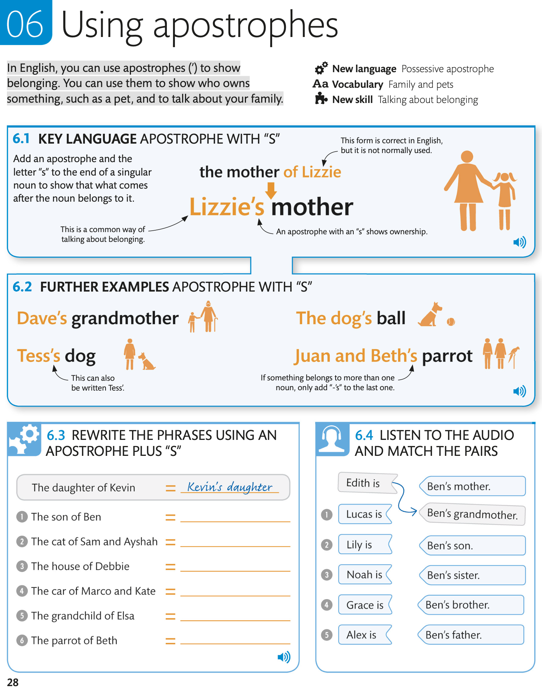
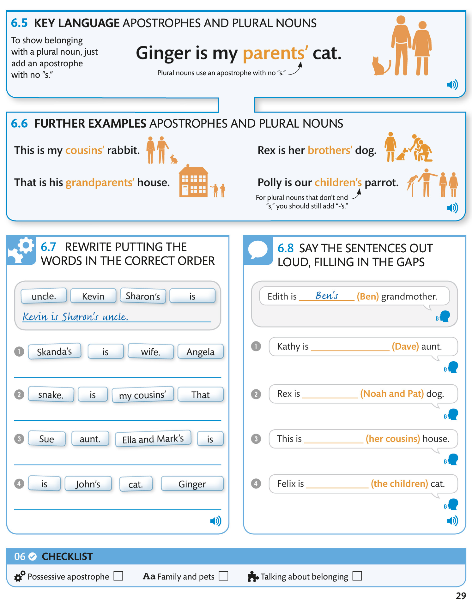

Using apostrophes / Использование апострофов
In English, you can use apostrophes (’) to show belonging. You can use them to show who owns something, such as a pet, and to talk about your family.
В английском языке вы можете использовать апострофы (’), чтобы показать принадлежность. Вы можете использовать их, чтобы показать, кому что-то принадлежит, например, домашнее животное, и рассказать о своей семье.

6.1 KEY LANGUAGE APOSTROPHE WITH “S” / КЛЮЧЕВЫЕ АПОСТРОФ С «S»
6.2 FURTHER EXAMPLES APOSTROPHE WITH “S” / ДАЛЬНЕЙШИЕ ПРИМЕРЫ АПОСТРОФА «S»
6.3 REWRITE THE PHRASES USING AN LISTEN TO THE AUDIO APOSTROPHE PLUS “S” / ПЕРЕПИШИТЕ ФРАЗЫ, ИСПОЛЬЗУЙТЕ АУДИОАПОСТРОФ ПЛЮС «S». AUDIO
6.4 LISTEN TO THE AUDIO APOSTROPHE PLUS “S” AND MATCH THE PAIRS / ПРОСЛУШАЙТЕ АУДИОАПОСТРОФ ПЛЮС «S» И СООТВЕТСТВУЙТЕ ПАРЫ

6.5 KEY LANGUAGE APOSTROPHES AND PLURAL NOUNS / КЛЮЧЕВЫЕ ЯЗЫКОВЫЕ АПОСТРОФЫ И СУЩЕСТВИТЕЛЬНЫЕ множественного числа
6.6 FURTHER EXAMPLES APOSTROPHES AND PLURAL NOUNS / ДАЛЬНЕЙШИЕ ПРИМЕРЫ АПОСТРОФОВ И СУЩЕСТВИТЕЛЬНЫХ множественного числа
6.7 REWRITE PUTTING THE WORDS IN THE CORRECT ORDER / ПЕРЕПИШИТЕ СЛОВА В ПРАВИЛЬНОМ ПОРЯДКЕ. AUDIO
6.8 SAY THE SENTENCES OUT LOUD, FILLING IN THE GAPS / ПРОИЗНЕСИТЕ ПРЕДЛОЖЕНИЯ В ГРОМКО, ЗАПОЛНЯЯ ПРОБЕЛЫ. AUDIO